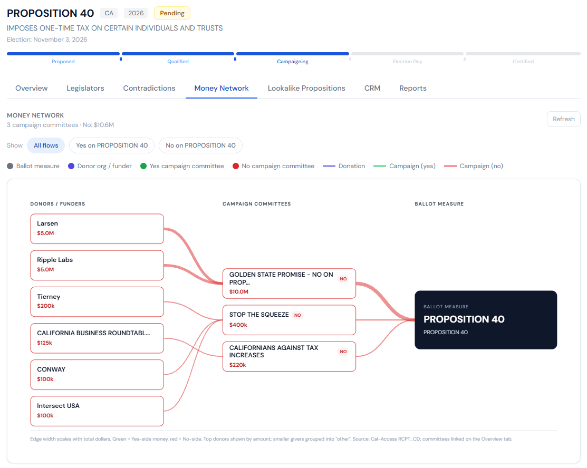

BallotBase connects campaign finance to the people and bills it moves. Donor networks, race intelligence, and client-ready briefings for campaigns. Bill tracking, money networks, and lobbying signals for the people working legislation.
Built for campaigns, consultants, lobbying firms, advocacy groups, and journalists.
Disclosure data lives in silos, a federal database, fifty state systems, thousands of city clerks, each with its own format and its own walls. BallotBase joins the layers, so the money can be followed wherever it goes.

The Today screen opens with everything a campaign manager asks before coffee: yesterday's take, pace against the filing deadline, money that moved against you overnight, and who to call today. Delivered to your inbox at 6:30am, too.
Explore Campaign Intelligence →The only legislation platform built on campaign finance data. Track bills, votes, and hearings, then see the donors, lobbying firms, and money networks moving behind them.
Request a demo and we'll walk you through a live race briefing. Donor intelligence, IE mapping, and Money Map output. A real race, real data.
No credit card required. We'll reach out personally within 24 hours.